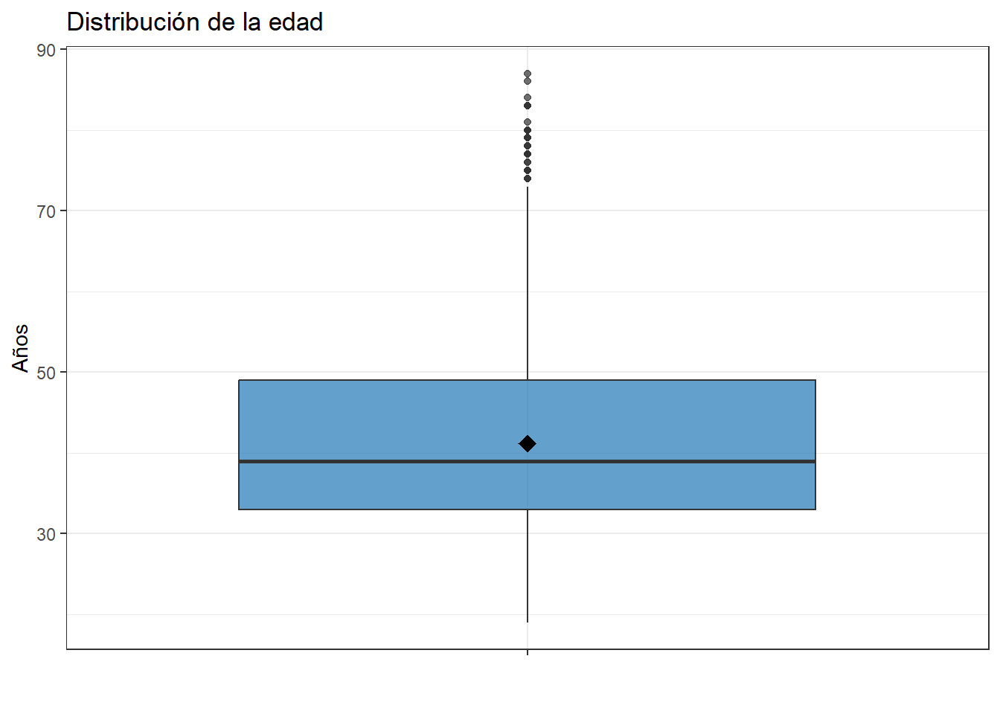
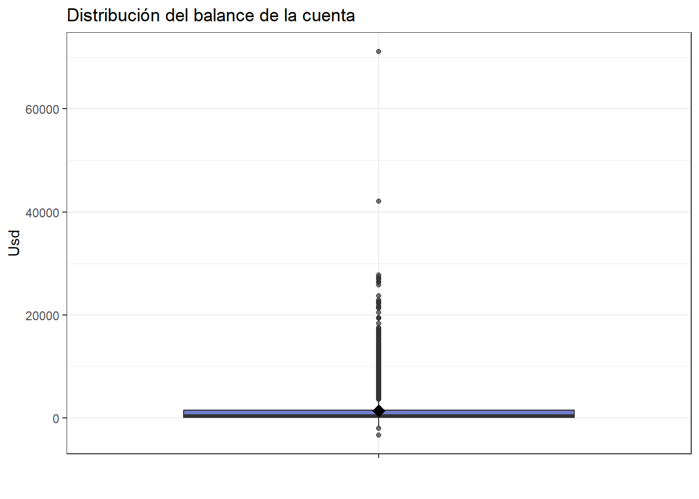
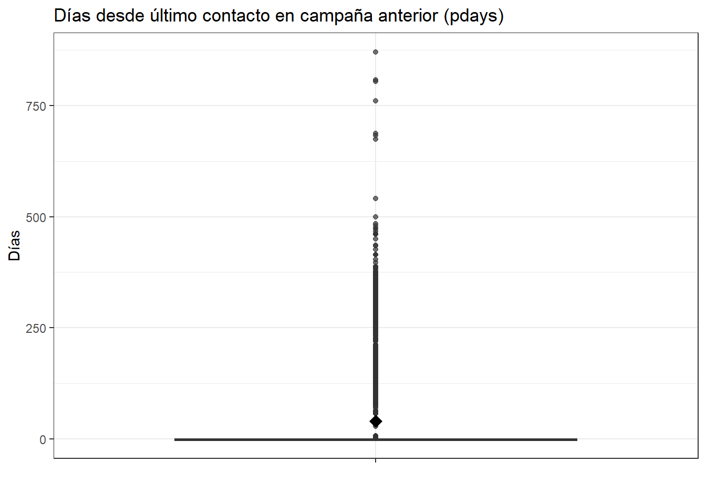
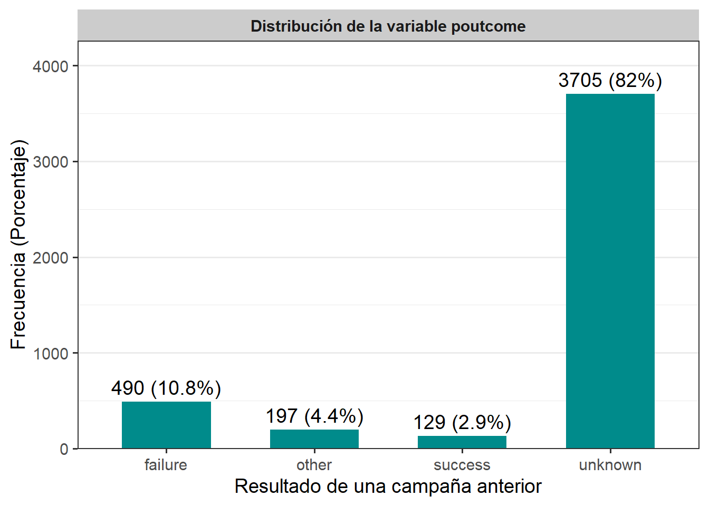

Capitulo 1 Analisis de la variable objetivo, numericas y categoricas indepentiendes
Contexto del conjunto de datos y la situacion sobre la que se va a trabajar
A continuacion se presentan datos asociados a campañas de marketing realizadas por un banco en Portugal. La finalidad de dichas campañas era impulsar la contratacion de depositos a plazo fijo por parte de los clientes afiliados al banco. Los datos abarcan informacion socioeconomica del cliente como detalles a la hora de la interaccion telefonica con el sujeto. En total se muestran 4521 registros y 17 variables. Las variables en cuestion junto con su descripcion: age: Edad del usuario. job: Profesión del usuario (desempleado, servicios, gestión). marital: Estado civil del usuario (soltero, casado, divorciado). education: Nivel educativo del usuario (primaria, secundaria, terciaria). default: Establece si el cliente tiene crédito en incumplimiento (sí/no). balance: Saldo promedio anual de la cuenta bancaria. housing: Establece si posee préstamo hipotecario (sí/no). loan: Establece si tiene préstamo personal (sí/no). contact: Tipo de comunicación utilizada (celular o fijo). day: Día del mes en que se realizó el último contacto. month: Mes del último contacto. duration: Duración de la última llamada (en segundos). campaign: Número de contactos realizados durante la campaña actual. pdays: Número de días transcurridos desde el último contacto previo (valor -1 indica que no hubo contacto anterior). previous: Número de contactos previos al actual. poutcome: Resultado de una campaña anterior (éxito, fracaso, desconocido). y: Variable objetivo que indica si el cliente aceptó (yes) o no aceptó (no) contratar un depósito a plazo fijo. La finalidad detras de este estudio es predecir si un cliente aceptara o no la oferta del contrato de un deposito a plazo fijo a partir de la informacion recolectada. Esto le permitira al banco poder mejorar y enrutar las campañas de marketing hacia aquellas opciones que les permitan alcanzar una mayor aceptacion de su oferta de deposito.
Comienzo del EDA
## age job marital education default balance housing loan contact day
## 1 30 unemployed married primary no 1787 no no cellular 19
## 2 33 services married secondary no 4789 yes yes cellular 11
## 3 35 management single tertiary no 1350 yes no cellular 16
## 4 30 management married tertiary no 1476 yes yes unknown 3
## 5 59 blue-collar married secondary no 0 yes no unknown 5
## month duration campaign pdays previous poutcome y
## 1 oct 79 1 -1 0 unknown no
## 2 may 220 1 339 4 failure no
## 3 apr 185 1 330 1 failure no
## 4 jun 199 4 -1 0 unknown no
## 5 may 226 1 -1 0 unknown no## [1] 4521 17## [1] "age" "job" "marital" "education" "default" "balance"
## [7] "housing" "loan" "contact" "day" "month" "duration"
## [13] "campaign" "pdays" "previous" "poutcome" "y"## 'data.frame': 4521 obs. of 17 variables:
## $ age : int 30 33 35 30 59 35 36 39 41 43 ...
## $ job : chr "unemployed" "services" "management" "management" ...
## $ marital : chr "married" "married" "single" "married" ...
## $ education: chr "primary" "secondary" "tertiary" "tertiary" ...
## $ default : chr "no" "no" "no" "no" ...
## $ balance : int 1787 4789 1350 1476 0 747 307 147 221 -88 ...
## $ housing : chr "no" "yes" "yes" "yes" ...
## $ loan : chr "no" "yes" "no" "yes" ...
## $ contact : chr "cellular" "cellular" "cellular" "unknown" ...
## $ day : int 19 11 16 3 5 23 14 6 14 17 ...
## $ month : chr "oct" "may" "apr" "jun" ...
## $ duration : int 79 220 185 199 226 141 341 151 57 313 ...
## $ campaign : int 1 1 1 4 1 2 1 2 2 1 ...
## $ pdays : int -1 339 330 -1 -1 176 330 -1 -1 147 ...
## $ previous : int 0 4 1 0 0 3 2 0 0 2 ...
## $ poutcome : chr "unknown" "failure" "failure" "unknown" ...
## $ y : chr "no" "no" "no" "no" ...## ── Attaching core tidyverse packages ──────────────────────── tidyverse 2.0.0 ──
## ✔ dplyr 1.1.4 ✔ readr 2.1.5
## ✔ forcats 1.0.0 ✔ stringr 1.5.1
## ✔ ggplot2 3.5.2 ✔ tibble 3.3.0
## ✔ lubridate 1.9.4 ✔ tidyr 1.3.1
## ✔ purrr 1.1.0
## ── Conflicts ────────────────────────────────────────── tidyverse_conflicts() ──
## ✖ dplyr::filter() masks stats::filter()
## ✖ dplyr::lag() masks stats::lag()
## ℹ Use the conflicted package (<http://conflicted.r-lib.org/>) to force all conflicts to become errors## age job marital education default balance housing loan contact
## 1 30 unemployed married primary no 1787 no no cellular
## 2 33 services married secondary no 4789 yes yes cellular
## 3 35 management single tertiary no 1350 yes no cellular
## 4 30 management married tertiary no 1476 yes yes unknown
## 5 59 blue-collar married secondary no 0 yes no unknown
## duration campaign pdays poutcome y
## 1 79 1 -1 unknown no
## 2 220 1 339 failure no
## 3 185 1 330 failure no
## 4 199 4 -1 unknown no
## 5 226 1 -1 unknown no## NA_age NA_job NA_marital NA_education NA_default NA_balance NA_housing
## 1 0 0 0 0 0 0 0
## NA_loan NA_contact NA_duration NA_campaign NA_pdays NA_poutcome NA_y
## 1 0 0 0 0 0 0 0 tabla_y <- df %>%
count(y, name = "Frecuencia") %>%
mutate(Porcentaje = round(Frecuencia/sum(Frecuencia)*100,1),
Etiqueta = paste0(Frecuencia, " (", Porcentaje, "%)"))
tabla_y %>%
ggplot(aes(x = factor(y), y = Frecuencia)) +
geom_col(fill = "purple", width = 0.6) +
geom_text(aes(label = Etiqueta), vjust = -0.5, size = 3) +
facet_grid(~ "Distribucion interes de deposito a plazo fijo (no/yes)") +
scale_y_continuous(expand = expansion(mult = c(0, 0.15))) +
labs(x = "Interes por el deposito a plazo fijo", y = "Numero de clientes (Porcentaje)") +
#coord_flip() +
theme_bw(base_size = 14) +
theme(
plot.title = element_blank(),
strip.background = element_rect(fill = "gray80", color = NA),
strip.text = element_text(face = "bold"),
panel.grid.major.y = element_blank(),
axis.text.y = element_text(size = 8)
) Analisis de la tabla y el grafico de barras de la variable “y” (objetivo) En ambas representaciones visuales, se evidencia que existe una gran mayoria de los clientes, los cuales no estan interesados en hacer parte de la oferta de deposito a plazo fijo con un total de 4000 usuarios (88.55% de la muestra), asi mismo pues, la gran minoria de los encuestados dijo que si a dicha oferta siendo estos el 11.5% de las personas (521 en total). Estos marcadores indican el desbalance que se presenta en la variable objetivo, y que es de sumo cuidado tener en cuenta este desequilibrio para llevar a cabo los modelos predictivos.
Tabla de las variables numericas independientes
df %>%
summarise(
n = length(age),
media = mean(age),
desviacion = sd(age),
mediana = median(age),
minimo = min(age),
maximo = max(age),
Q1 = quantile(age, 0.25),
Q3 = quantile(age, 0.75),
IQR = IQR(age)) %>%
mutate(variable = "age") -> variable_age
df %>%
summarise(
n = length(balance),
media = mean(balance),
desviacion = sd(balance),
mediana = median(balance),
minimo = min(balance),
maximo = max(balance),
Q1 = quantile(balance, 0.25),
Q3 = quantile(balance, 0.75),
IQR = IQR(balance)) %>%
mutate(variable = "balance") -> variable_balance
df %>%
summarise(
n = length(duration),
media = mean(duration),
desviacion = sd(duration),
mediana = median(duration),
minimo = min(duration),
maximo = max(duration),
Q1 = quantile(duration, 0.25),
Q3 = quantile(duration, 0.75),
IQR = IQR(duration)) %>%
mutate(variable = "duration")-> variable_duration
df %>%
summarise(
n = length(campaign),
media = mean(campaign),
desviacion = sd(campaign),
mediana = median(campaign),
minimo = min(campaign),
maximo = max(campaign),
Q1 = quantile(campaign, 0.25),
Q3 = quantile(campaign, 0.75),
IQR = IQR(campaign)) %>%
mutate(variable = "campaign")-> variable_campaign
df %>%
summarise(
n = length(pdays),
media = mean(pdays),
desviacion = sd(pdays),
mediana = median(pdays),
minimo = min(pdays),
maximo = max(pdays),
Q1 = quantile(pdays, 0.25),
Q3 = quantile(pdays, 0.75),
IQR = IQR(pdays)) %>%
mutate(variable = "pdays")-> variable_pdays
bind_rows(variable_age, variable_balance, variable_duration,variable_campaign,variable_pdays) %>%
select(variable, everything())## variable n media desviacion mediana minimo maximo Q1 Q3 IQR
## 1 age 4521 41.17010 10.576211 39 19 87 33 49 16
## 2 balance 4521 1422.65782 3009.638142 444 -3313 71188 69 1480 1411
## 3 duration 4521 263.96129 259.856633 185 4 3025 104 329 225
## 4 campaign 4521 2.79363 3.109807 2 1 50 1 3 2
## 5 pdays 4521 39.76664 100.121124 -1 -1 871 -1 -1 0Interpretacion tabla Por medio de un analisis estadistico, se evidencia un promedio de edad en los clientes del banco portugues de 41 años, con un rango que arranca desde los 19 años hasta los 87 como el dato maximo registrado, lo que muestra una poblacion adulta diversificada. El saldo promedio anual en las cuentas bancarias muestra una media de 1422 USD y una alta desviacion (Desviacion = 3009); además de unos valores extremos que abarcan saldos en numeros negativos como saldos bastante elevados (Maximo = 71188). Por otro lado, la duracion de las llamadas evidencia una media muestral de 264 segundos aproximadamente, y una desviacion considerable de 259 segundos; la mediana, es decir, el 50% de los datos es menor o igual a 185 segundos, y la duracion de estas llamadas esta comprendida en un intervalo que va desde los 4 segundos hasta los 3025, lo que simboliza una alta dispersion en los datos, y que por tanto puede derivar en sesgos.En relación con el número de contactos durante la campaña (campaign), se registra un promedio de 2,79 contactos (Desviacion = 3,11), con el 50 % de los casos por debajo de 2. Aunque se presentan valores extremos de hasta 50 contactos, la mayoría de los clientes fue contactada pocas veces, tal como refleja el rango intercuartílico comprendido entre los percentiles P25 y P75 (lo mismo que decir Q1 y Q3). A su vez, la variable pdays, que representa los días transcurridos desde el último contacto en campañas anteriores, muestra una media de 39,77 días (Desviacion = 100,12 días). Sin embargo, tanto la mediana como los percentiles P25 y P75 se encuentran en −1, lo que indica que la mayoría de los clientes no había sido contactada previamente. Aun así, existen registros que superan los 800 días, lo que evidencia comportamientos heterogéneos y la posible existencia de distintos segmentos dentro de la base de clientes.
Graficos boxplot (caja y bigotes) de las variables numericas
##
## Attaching package: 'gridExtra'## The following object is masked from 'package:dplyr':
##
## combine# Boxplot de age
df %>%
ggplot(aes(x = "", y = age)) +
geom_boxplot(fill = "#1f77b4", alpha = 0.7) +
stat_summary(fun = mean, geom = "point", shape = 18, size = 4, color = "black") +
labs(
title = "Distribución de la edad",
y = "Años",
x = ""
) +
theme_bw() Interpretacion El boxplot muestra que la mayoría de las edades se concentran entre 32 y 48 años, con una mediana cercana a 38 y un promedio ligeramente mayor, lo que indica una ligera asimetría hacia edades más altas. El rango total (sin contar atípicos) va de unos 22 a 72 años, y se observan varios outliers entre 72 y 90 años, lo que sugiere que, aunque la distribución es relativamente compacta, existen casos aislados de personas considerablemente mayores.
# Boxplot de balance
df %>%
ggplot(aes(x = "", y = balance)) +
geom_boxplot(fill = "#2f43b1", alpha = 0.7) +
stat_summary(fun = mean, geom = "point", shape = 18, size = 4, color = "black") +
labs(
title = "Distribución del balance de la cuenta",
y = "Usd",
x = ""
) +
theme_bw() Interpretacion La distribución del balance de la cuenta muestra una fuerte asimetría positiva, con la mayoría de los saldos concentrados cerca de valores bajos y un gran número de valores atípicos que alcanzan hasta 71,188 USD. El balance promedio es de 1,422.66 USD (Desviacion = 3,009.64), mientras que la mediana es de solo 444 USD, lo que refleja que pocos clientes con saldos muy altos elevan el promedio. Además, se observan saldos negativos mínimos de -3,313 USD, lo que indica sobregiros o deudas, y un rango intercuartílico que va de 69 a 1,480 USD, confirmando que la mayoría de los clientes mantiene balances reducidos.
#Diagrama de boxplot para duration
df %>%
ggplot(aes(x = "", y = duration)) +
geom_boxplot(fill = "#2ca02c", alpha = 0.7) +
stat_summary(fun = mean, geom = "point", shape = 18, size = 4, color = "black") +
labs(
title = "Distribución de la duración de llamada (duration)",
y = "Segundos",
x = ""
) +
theme_bw()Interpretacion La duración de las llamadas presenta una media de aproximadamente 264 segundos (Desviacion = 260), con una mediana de 185 segundos, lo que indica que la mayoría de las llamadas fueron relativamente cortas. El rango intercuartílico va de 104 a 329 segundos, reflejando que el 50 % central de las llamadas dura entre poco menos de 2 y alrededor de 5,5 minutos. Sin embargo, el boxplot revela una marcada asimetría positiva debido a la presencia de múltiples valores atípicos que alcanzan hasta 3025 segundos (más de 50 minutos), lo que sugiere que, aunque la mayoría de las interacciones fueron breves, existen casos puntuales de llamadas excepcionalmente largas.
#Diagrama de boxplot para campaign
df %>%
ggplot(aes(x = "", y = campaign)) +
geom_boxplot(fill = "#ff7f0e", alpha = 0.7) +
stat_summary(fun = mean, geom = "point", shape = 18, size = 4, color = "black") +
labs(
title = "Distribución del número de contactos (campaign)",
y = "Número de contactos",
x = ""
) +
theme_bw()Interpretacion La variable (campaign) muestra una distribución sesgada positivamente, con la mayoría de los clientes contactados pocas veces (mediana de 2 y Q3 en 3), pero con algunos casos extremos que llegan hasta 50 contactos, lo que eleva la media (2.79) por encima de la mediana. El diagrama de caja confirma la presencia de numerosos valores atípicos por encima del rango intercuartílico, reflejando que la mayor parte de los datos se concentra en valores bajos mientras unos pocos casos muy altos alargan la cola derecha.
# Diagrama de boxplot para pdays
df %>%
ggplot(aes(x = "", y = pdays)) +
geom_boxplot(fill = "#9467bd", alpha = 0.7) +
stat_summary(fun = mean, geom = "point", shape = 18, size = 4, color = "black") +
labs(
title = "Días desde último contacto en campaña anterior (pdays)",
y = "Días",
x = ""
) +
theme_bw() Interpretacion El boxplot de (pdays) muestra una distribución fuertemente sesgada positivamente, donde la mayoría de los clientes tienen valores cercanos a cero días desde el último contacto, concentrándose en el primer cuartil, mientras que existen numerosos valores atípicos muy alejados (hasta más de 800 días) que generan una cola derecha larga. Esto indica que, aunque la mediana es baja, un pequeño grupo de clientes fue contactado después de intervalos de tiempo extremadamente largos, lo que eleva la media y refleja una gran dispersión en la variable.
Ahora procedemos a analizar las variables categoricas:
Tabla agrupada de variables categoricas
#Para job
tabla_job <- df %>%
count(job, name = "Frecuencia") %>%
mutate(Porcentaje = round(Frecuencia / sum(Frecuencia) * 100, 2),
Variable = "job",
Categoria = job) %>%
select(Variable, Categoria, Frecuencia, Porcentaje)
#Para marital
tabla_marital <- df %>%
count(marital, name = "Frecuencia") %>%
mutate(Porcentaje = round(Frecuencia / sum(Frecuencia) * 100, 2),
Variable = "marital",
Categoria = marital) %>%
select(Variable, Categoria, Frecuencia, Porcentaje)
#Para education
tabla_education <- df %>%
count(education, name = "Frecuencia") %>%
mutate(Porcentaje = round(Frecuencia / sum(Frecuencia) * 100, 2),
Variable = "education",
Categoria = education) %>%
select(Variable, Categoria, Frecuencia, Porcentaje)
#Para default
tabla_default <- df %>%
count(default, name = "Frecuencia") %>%
mutate(Porcentaje = round(Frecuencia / sum(Frecuencia) * 100, 2),
Variable = "default",
Categoria = default) %>%
select(Variable, Categoria, Frecuencia, Porcentaje)
#Para housing
tabla_housing <- df %>%
count(housing, name = "Frecuencia") %>%
mutate(Porcentaje = round(Frecuencia / sum(Frecuencia) * 100, 2),
Variable = "housing",
Categoria = housing) %>%
select(Variable, Categoria, Frecuencia, Porcentaje)
#Para loan
tabla_loan <- df %>%
count(loan, name = "Frecuencia") %>%
mutate(Porcentaje = round(Frecuencia / sum(Frecuencia) * 100, 2),
Variable = "loan",
Categoria = loan) %>%
select(Variable, Categoria, Frecuencia, Porcentaje)
#Para contact
tabla_contact <- df %>%
count(contact, name = "Frecuencia") %>%
mutate(Porcentaje = round(Frecuencia / sum(Frecuencia) * 100, 2),
Variable = "contact",
Categoria = contact) %>%
select(Variable, Categoria, Frecuencia, Porcentaje)
#Para poutcome
tabla_poutcome <- df %>%
count(poutcome, name = "Frecuencia") %>%
mutate(Porcentaje = round(Frecuencia / sum(Frecuencia) * 100, 2),
Variable = "poutcome",
Categoria = poutcome) %>%
select(Variable, Categoria, Frecuencia, Porcentaje)
#Todas las tablas
bind_rows(tabla_job, tabla_marital, tabla_education,tabla_default,
tabla_housing, tabla_loan,tabla_contact, tabla_poutcome)## Variable Categoria Frecuencia Porcentaje
## 1 job admin. 478 10.57
## 2 job blue-collar 946 20.92
## 3 job entrepreneur 168 3.72
## 4 job housemaid 112 2.48
## 5 job management 969 21.43
## 6 job retired 230 5.09
## 7 job self-employed 183 4.05
## 8 job services 417 9.22
## 9 job student 84 1.86
## 10 job technician 768 16.99
## 11 job unemployed 128 2.83
## 12 job unknown 38 0.84
## 13 marital divorced 528 11.68
## 14 marital married 2797 61.87
## 15 marital single 1196 26.45
## 16 education primary 678 15.00
## 17 education secondary 2306 51.01
## 18 education tertiary 1350 29.86
## 19 education unknown 187 4.14
## 20 default no 4445 98.32
## 21 default yes 76 1.68
## 22 housing no 1962 43.40
## 23 housing yes 2559 56.60
## 24 loan no 3830 84.72
## 25 loan yes 691 15.28
## 26 contact cellular 2896 64.06
## 27 contact telephone 301 6.66
## 28 contact unknown 1324 29.29
## 29 poutcome failure 490 10.84
## 30 poutcome other 197 4.36
## 31 poutcome success 129 2.85
## 32 poutcome unknown 3705 81.95Interpretacion general Viendo la variable (marital), la mayoria de los clientes registrados (61,87%) son de estado civil casados, seguidos de 1196 que se declaran solteros (26,45%) y el resto son divorciados (11,68%). En cuanto a la educacion, la mayoria de estos usuarios ha cursado hasta niveles de secundaria con 2306 personas(51,01%), seguidos de personas que han tenido niveles de educacion terciaria como universidades, institutos tecnicos, maestrias, postgrados, etc; con un porcentaje de 29,86% lo que es equivalente a 1350 individuos, luego se ubican las personas con una educacion primaria como maximo, siendo 678 personas, las cuales representan un 15% de la muestra y por ultimo estan aquellos que no registran algun tipo de nivel de educacion. La variable (default) muestra si los clientes presentan credito en incumplimiento, a lo que la gran mayoria dice que no, 4445 personas (98,32%) niegan tener un credito sin cumplir, y solo 76 personas afirman estar incumpliendo con dicho credito, por otra parte, el 56,6% de los usuarios dijo que si despues de preguntarles si tenian un credito hipotecario, el otro 43,4% expuso que no tenian credito hipotecario; tambien se dio a conocer que la mayoria no tiene creditos personales, fueron 3830 personas las que negaron tener este tipo de credito, representando un 84,72% de la muestra; el otro 15,28% (691 usuarios) dijeron que si. Ademas, se recogio informacion acerca del metodo utilizado para contactarlos, donde mayoritariamente (64,06%) dijeron que se habian comunicado con ellos via celular, luego con casi el 30% estan las personas que desconocen el tipo de comunicacion que usaron, y con el porcentaje mas bajo (6,66%) se pueden observar las personas que tuvieron contacto con el banco por medio de un telefono fijo. En los resultados de campañas anteriores (poutcome), 3705 usuarios manifestaron desconocer el resultado de campañas anteriores, siendo estos la gran mayoria con un 81,95%, seguidos del 10,84% que señalan a las campañas previas como un absoluto fracaso, luego se ubican con un 4,36% (197 personas) aquellos que tienen otra percepcion frente a estas campañas, y por ultimo, vemos a la gran minoria que establece que las campañas fueron un rotundo exito (129 personas que representan el 2,85%). En cuanto a las ocupaciones de los usuarios, se observa que las más comunes son “management” (21.43%), “blue-collar” (20.92%) y “technician” (16.99%), lo que indica que estos tres grupos representan casi el 60% de la muestra total. En contraste, las personas con ocupaciones que se desconocen (0.84%), estudiantes (1.86%) y empleados domesticos (2.48%) tienen una representación mucho menor. Esto sugiere una muestra compuesta principalmente por trabajadores con cargos administrativos, técnicos y operativos, lo cual podría reflejar el perfil laboral de una muestra económicamente activa en sectores formales. Entre otros trabajos consignados en la informacion, podemos observar 168 emprendedores (3,72%), 478 administradores (10,57%), 230 personas retiradas (5,09%), 183 trabajadores autonomos (4,05%), 417 que se ocupan de servicios que involucran atencion directa al publico (9,22%) y 128 desempleados (2,83%).
Graficos de barras para cada variable categorica
grafico_default <- df %>%
count(default, name = "Frecuencia") %>%
mutate(Porcentaje = round(Frecuencia / sum(Frecuencia) * 100, 1),
Etiqueta = paste0(Frecuencia, " (", Porcentaje, "%)"))
grafico_default %>%
ggplot(aes(x = default, y = Frecuencia)) +
geom_col(fill = "#008B8B", width = 0.6) +
geom_text(aes(label = Etiqueta), vjust = -0.5, size = 5) +
facet_wrap(~ "Distribución de la variable default") +
scale_y_continuous(expand = expansion(mult = c(0, 0.15))) +
labs(x = "¿Tiene crédito en incumplimiento?",
y = "Frecuencia (Porcentaje)") +
theme_bw(base_size = 14) +
theme(
plot.title = element_blank(),
strip.background = element_rect(fill = "gray80", color = NA),
strip.text = element_text(face = "bold"),
panel.grid.major.x = element_blank()
) Interpretacion:
La grafica de la variable (default) nos muestra como el 98,3% de los clientes del banco encuestados en la muestra no estan incumpliendo con el pago de un credito, en comparacion con el 1,7% de aquellas que si estan incumpliendo. Esta gran diferencia permite conocer una muestra de personas que se encuentran al dia con sus compromisos financieros, y que aquellas personas que tienen faltas son muy pocas.
Interpretacion:
La grafica de la variable (default) nos muestra como el 98,3% de los clientes del banco encuestados en la muestra no estan incumpliendo con el pago de un credito, en comparacion con el 1,7% de aquellas que si estan incumpliendo. Esta gran diferencia permite conocer una muestra de personas que se encuentran al dia con sus compromisos financieros, y que aquellas personas que tienen faltas son muy pocas.
grafico_job <- df %>%
count(job, name = "Frecuencia") %>%
mutate(Porcentaje = round(Frecuencia / sum(Frecuencia) * 100, 1),
Etiqueta = paste0(Frecuencia, " (", Porcentaje, "%)"))
grafico_job %>%
ggplot(aes(x = job, y = Frecuencia)) +
geom_col(fill = "#008B8B", width = 0.6) +
geom_text(aes(label = Etiqueta), vjust = -0.5, size = 5) +
facet_wrap(~ "Distribución de la variable job") +
scale_y_continuous(expand = expansion(mult = c(0, 0.15))) +
labs(x = "Ocupacion",
y = "Frecuencia (Porcentaje)") +
theme_bw(base_size = 14) +
theme(
plot.title = element_blank(),
strip.background = element_rect(fill = "gray80", color = NA),
strip.text = element_text(face = "bold"),
panel.grid.major.x = element_blank()
) Interpretacion:
Respecto a las ocupaciones de los participantes, se destaca que los grupos más representativos son quienes se desempeñan en áreas de gestión (21.43%), trabajos operativos o manuales (20.92%) y funciones técnicas (16.99%), concentrando cerca del 60% del total. En cambio, los estudiantes (1.86%), empleados domésticos (2.48%) y aquellos cuya ocupación no fue especificada (0.84%) tienen una presencia marginal. Esto revela que la muestra está compuesta mayoritariamente por personas activas en el mercado laboral formal, con roles administrativos, técnicos y operativos. Además, se incluyen otros perfiles como 168 emprendedores (3.72%), 478 administradores (10.57%), 230 jubilados (5.09%), 183 trabajadores independientes (4.05%), 417 empleados en atención al público (9.22%) y 128 personas desempleadas (2.83%), lo que aporta mayor diversidad al panorama ocupacional.
Interpretacion:
Respecto a las ocupaciones de los participantes, se destaca que los grupos más representativos son quienes se desempeñan en áreas de gestión (21.43%), trabajos operativos o manuales (20.92%) y funciones técnicas (16.99%), concentrando cerca del 60% del total. En cambio, los estudiantes (1.86%), empleados domésticos (2.48%) y aquellos cuya ocupación no fue especificada (0.84%) tienen una presencia marginal. Esto revela que la muestra está compuesta mayoritariamente por personas activas en el mercado laboral formal, con roles administrativos, técnicos y operativos. Además, se incluyen otros perfiles como 168 emprendedores (3.72%), 478 administradores (10.57%), 230 jubilados (5.09%), 183 trabajadores independientes (4.05%), 417 empleados en atención al público (9.22%) y 128 personas desempleadas (2.83%), lo que aporta mayor diversidad al panorama ocupacional.
grafico_marital <- df %>%
count(marital, name = "Frecuencia") %>%
mutate(Porcentaje = round(Frecuencia / sum(Frecuencia) * 100, 1),
Etiqueta = paste0(Frecuencia, " (", Porcentaje, "%)"))
grafico_marital %>%
ggplot(aes(x = marital, y = Frecuencia)) +
geom_col(fill = "#008B8B", width = 0.6) +
geom_text(aes(label = Etiqueta), vjust = -0.5, size = 5) +
facet_wrap(~ "Distribución de la variable marital") +
scale_y_continuous(expand = expansion(mult = c(0, 0.15))) +
labs(x = "Estado Civil",
y = "Frecuencia (Porcentaje)") +
theme_bw(base_size = 14) +
theme(
plot.title = element_blank(),
strip.background = element_rect(fill = "gray80", color = NA),
strip.text = element_text(face = "bold"),
panel.grid.major.x = element_blank()
)Interpretacion: La variable (marital) muestra que la mayoría de los clientes registrados son casados (61.87%), seguidos por 1,196 solteros (26.45%), mientras que el 11.68% restante corresponde a personas divorciadas; lo que sugiere una base de datos principalmente formada por personas con nexos conyugales.
grafico_education <- df %>%
count(education, name = "Frecuencia") %>%
mutate(Porcentaje = round(Frecuencia / sum(Frecuencia) * 100, 1),
Etiqueta = paste0(Frecuencia, " (", Porcentaje, "%)"))
grafico_education %>%
ggplot(aes(x = education, y = Frecuencia)) +
geom_col(fill = "#008B8B", width = 0.6) +
geom_text(aes(label = Etiqueta), vjust = -0.5, size = 5) +
facet_wrap(~ "Distribución de la variable education") +
scale_y_continuous(expand = expansion(mult = c(0, 0.15))) +
labs(x = "Nivel de Educacion (estudio)",
y = "Frecuencia (Porcentaje)") +
theme_bw(base_size = 14) +
theme(
plot.title = element_blank(),
strip.background = element_rect(fill = "gray80", color = NA),
strip.text = element_text(face = "bold"),
panel.grid.major.x = element_blank()
)Interpretacion: El gráfico muestra que la mayoría de las personas encuestadas tienen educación secundaria, representando el 51% (2306 individuos) del total. Le sigue la educación terciaria con un 29.9% (1350 personas), mientras que un 15% (678 personas) alcanzó solo la primaria. Un grupo reducido, el 4.1% (187 personas), no tiene registrado su nivel educativo. Esto indica que el nivel secundario es el más común, mientras que la educación primaria y la falta de información son minoritarias.
grafico_housing <- df %>%
count(housing, name = "Frecuencia") %>%
mutate(Porcentaje = round(Frecuencia / sum(Frecuencia) * 100, 1),
Etiqueta = paste0(Frecuencia, " (", Porcentaje, "%)"))
grafico_housing %>%
ggplot(aes(x = housing, y = Frecuencia)) +
geom_col(fill = "#008B8B", width = 0.6) +
geom_text(aes(label = Etiqueta), vjust = -0.5, size = 5) +
facet_wrap(~ "Distribución de la variable housing") +
scale_y_continuous(expand = expansion(mult = c(0, 0.15))) +
labs(x = "¿Tiene credito hipotecario?",
y = "Frecuencia (Porcentaje)") +
theme_bw(base_size = 14) +
theme(
plot.title = element_blank(),
strip.background = element_rect(fill = "gray80", color = NA),
strip.text = element_text(face = "bold"),
panel.grid.major.x = element_blank()
)Interpretacion: El gráfico indica que la mayoría de las personas encuestadas, un 56.6% (2559 individuos), posee un crédito hipotecario, mientras que el 43.4% restante (1962 personas) no lo tiene. Esto refleja que más de la mitad de la población analizada mantiene compromisos financieros asociados a la adquisición de vivienda.
grafico_loan <- df %>%
count(loan, name = "Frecuencia") %>%
mutate(Porcentaje = round(Frecuencia / sum(Frecuencia) * 100, 1),
Etiqueta = paste0(Frecuencia, " (", Porcentaje, "%)"))
grafico_loan %>%
ggplot(aes(x = loan, y = Frecuencia)) +
geom_col(fill = "#008B8B", width = 0.6) +
geom_text(aes(label = Etiqueta), vjust = -0.5, size = 5) +
facet_wrap(~ "Distribución de la variable loan") +
scale_y_continuous(expand = expansion(mult = c(0, 0.15))) +
labs(x = "¿Tiene credito personal?",
y = "Frecuencia (Porcentaje)") +
theme_bw(base_size = 14) +
theme(
plot.title = element_blank(),
strip.background = element_rect(fill = "gray80", color = NA),
strip.text = element_text(face = "bold"),
panel.grid.major.x = element_blank()
)Interpretacion: El gráfico muestra que la gran mayoría de los encuestados, un 84.7% (3830 personas), no tiene un crédito personal, mientras que solo el 15.3% (691 personas) sí cuenta con este tipo de préstamo. Esto evidencia que el uso de créditos personales es considerablemente menor en comparación con quienes no los poseen.
grafico_contact <- df %>%
count(contact, name = "Frecuencia") %>%
mutate(Porcentaje = round(Frecuencia / sum(Frecuencia) * 100, 1),
Etiqueta = paste0(Frecuencia, " (", Porcentaje, "%)"))
grafico_contact %>%
ggplot(aes(x = contact, y = Frecuencia)) +
geom_col(fill = "#008B8B", width = 0.6) +
geom_text(aes(label = Etiqueta), vjust = -0.5, size = 5) +
facet_wrap(~ "Distribución de la variable contact") +
scale_y_continuous(expand = expansion(mult = c(0, 0.15))) +
labs(x = "Tipo de comunicacion utilizada",
y = "Frecuencia (Porcentaje)") +
theme_bw(base_size = 14) +
theme(
plot.title = element_blank(),
strip.background = element_rect(fill = "gray80", color = NA),
strip.text = element_text(face = "bold"),
panel.grid.major.x = element_blank()
)Interpretacion: El gráfico revela que el medio de comunicación más utilizado es el teléfono celular, con un 64.1% (2896 casos), seguido por un 29.3% (1324 casos) donde el tipo de contacto es desconocido. En contraste, solo el 6.7% (301 casos) utiliza el teléfono fijo. Esto indica una clara preferencia por el celular como canal de comunicación, mientras que el uso del teléfono fijo es muy reducido.
grafico_poutcome <- df %>%
count(poutcome, name = "Frecuencia") %>%
mutate(Porcentaje = round(Frecuencia / sum(Frecuencia) * 100, 1),
Etiqueta = paste0(Frecuencia, " (", Porcentaje, "%)"))
grafico_poutcome %>%
ggplot(aes(x = poutcome, y = Frecuencia)) +
geom_col(fill = "#008B8B", width = 0.6) +
geom_text(aes(label = Etiqueta), vjust = -0.5, size = 5) +
facet_wrap(~ "Distribución de la variable poutcome") +
scale_y_continuous(expand = expansion(mult = c(0, 0.15))) +
labs(x = "Resultado de una campaña anterior",
y = "Frecuencia (Porcentaje)") +
theme_bw(base_size = 14) +
theme(
plot.title = element_blank(),
strip.background = element_rect(fill = "gray80", color = NA),
strip.text = element_text(face = "bold"),
panel.grid.major.x = element_blank()
) Interpretacion: El gráfico muestra que en el 82% de los casos (3705 registros) se desconoce el resultado de la campaña anterior, mientras que un 10.8% (490 casos) terminó en fracaso y solo un 2.9% (129 casos) fue exitoso. El 4.4% restante (197 casos) se clasifica como “otro”. Esto evidencia una gran carencia de información sobre campañas previas y una baja tasa de éxito entre los casos conocidos.